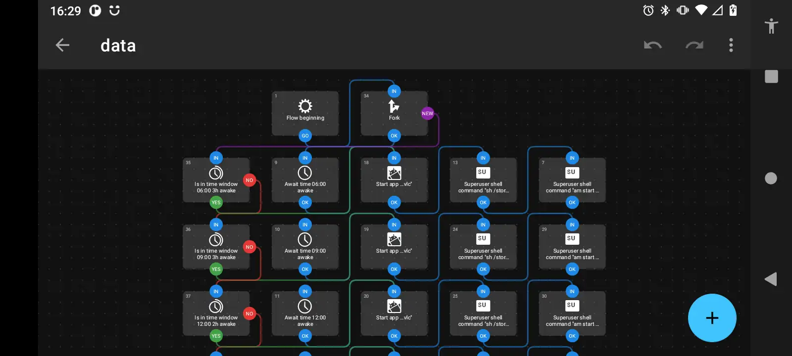

It’s easier to do this on a proper linux machine, but the benefits of having this on your phone are pretty obvious (to me). For anyone desiring to speak more than two languages, it can become difficult to make sure to actually contact all of the languages frequently enough to make progress. While “All Japanese All The Time” (visit the mirrored site) might work for someone only studying Japanese, it hardly works for someone studying more languages than that. Even “Khatzumoto”, who invented this religious cult, seems to have fallen flat in his attempts to learn other East Asian languages with his approach.
Alexandre Arguilles knows a large number of languages, which he did by ruthlessly categorizing his time in 15 minute segments and reading for many hours a day, in many languages, for many years.
I think a good middle place is to study a normal number of languages and “Get Gud.” About five, or so.
Rather than 15 minute time segments and quickly switching between languages, I suggest “timeblocking” multi-hour segments. This allows deep concentration on books, or technical materials, which I think is a more productive activity in general than reading for a few minutes in one language and switch to another.
By implementing this Polyglot Radio, we can know that at any time, if listening is a prudent activity, that the device will be ready to provide the scheduled content.
The crux of the method is to check the time. Is it between times X and Y? Great, make sure to be playing the correct language material according to your calendar. The device needs to be loaded up with tons of content to randomly shuffle and be playing at any time, just like a radio station. Audiobooks, podcasts, and movie tracks with audio description, or condensed audio, are the best.
The only app that I was able to get working was the “Automate” app, which unfortunately needs to be downloaded with a “premium” patch applied in order to work properly. The actual “flow” that I use is available here, and can be imported into the app as a template. It shuffles m3u playlists, assuming that they have no metadata (ie. made with this command):
find . -type f >files.m3u
and just randomly shuffles the lines. Android doesn’t have `shuf`.
The script:
cat "$1" | awk 'BEGIN{srand()}{printf "%06d %s\n", rand()*1000000, $0;}' | sort -n | cut -c8- >"$2"